| 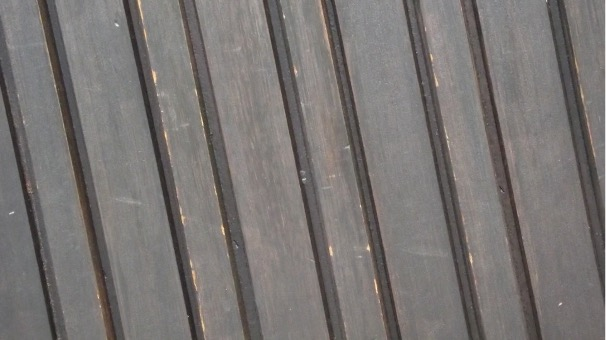 | 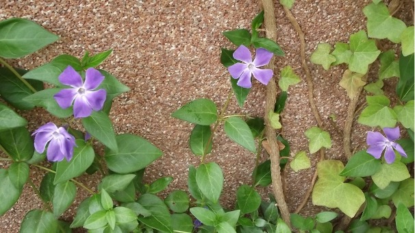 |
|
|
Das Abtasttheorem besagt, dass ein analoges Signal nur dann ohne Informationsverlust digitalisiert und wiederhergestellt werden kann, wenn die Abtastrate mindestens doppelt so hoch ist wie die höchste enthaltene Frequenz des Signals. In der Bildverarbeitung entspricht die Abtastrate der Anzahl der Pixel pro Längeneinheit. Wenn die Abtastung zu grob ist, können feine Bilddetails nicht mehr korrekt dargestellt werden. Folgen:
| 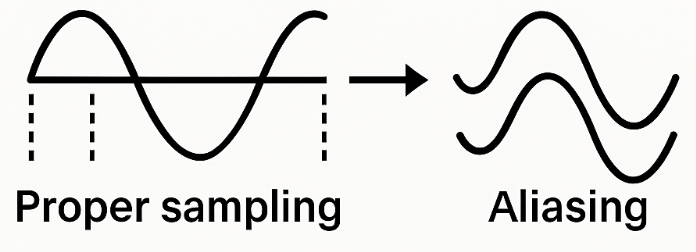 |
 |
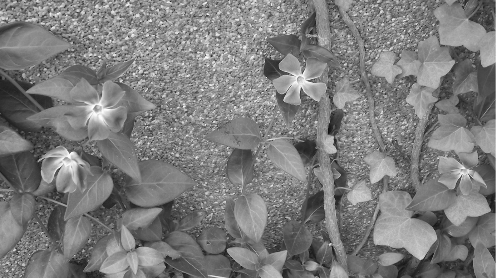 |
Aliasing entsteht bei Bild- und Videoaufnahmen, wenn die räumliche Abtastfrequenz zu niedrig ist, um feine Strukturen korrekt wiederzugeben. Werden beim Downsampling – wie in der Aufgabe – ungeradzahlige Spalten (oder Zeilen) einfach durch die vorherige Spalte ersetzt, halbiert sich die effektive Auflösung. Feine Muster können dann nicht mehr richtig erfasst werden und erscheinen im Bild als Verzerrungen, zum Beispiel als Moiré-Muster oder falsche „Wellen“. Das passiert genau dann, wenn die Strukturen im Bild eine höhere Frequenz besitzen als die neue Abtastfrequenz erlaubt.
Testbilder gratings
horizontal
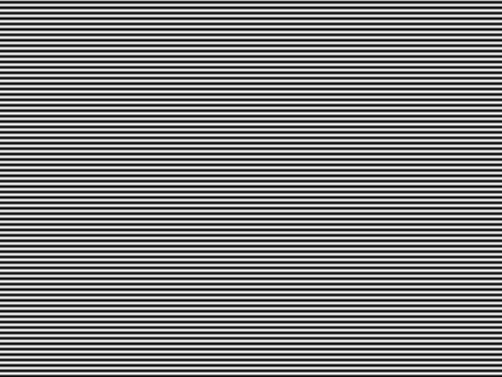vertikal
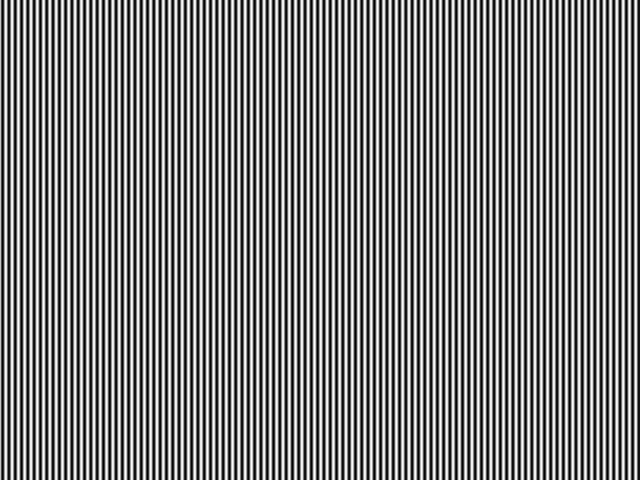Eigene veränderte Bilder von den gratings
horizontal
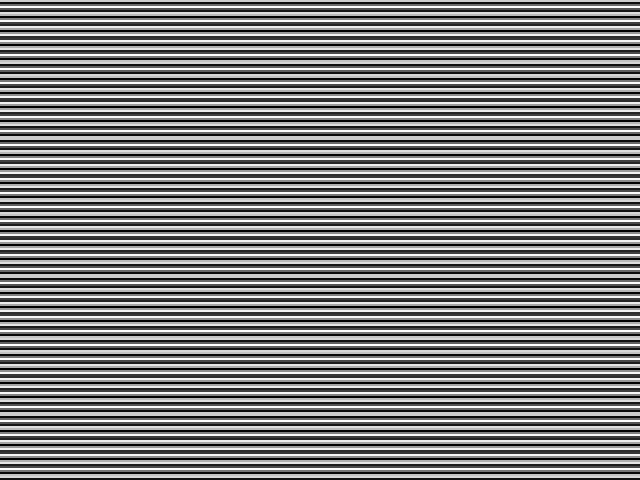vertikal
Bei den Grating-Testbildern verlaufen die Linien entweder nur vertikal oder nur horizontal. Aliasing entsteht immer senkrecht zur Linienrichtung, weil dort die Helligkeit regelmäßig wechselt.
In der jeweils anderen Richtung ändern sich die Pixelwerte nicht, daher bewirkt das Downsampling dort keine sichtbare Veränderung. Die Verschlechterung wird ab einer Periodenlänge von ca. 4 Pixeln sichtbar – dann ist die Abtastfrequenz zu klein, um das Muster korrekt zu erfassen, und es entstehen Moiré-Effekte bzw. Verzerrungen.
Nature Bitreduzierung auf 8 Bit
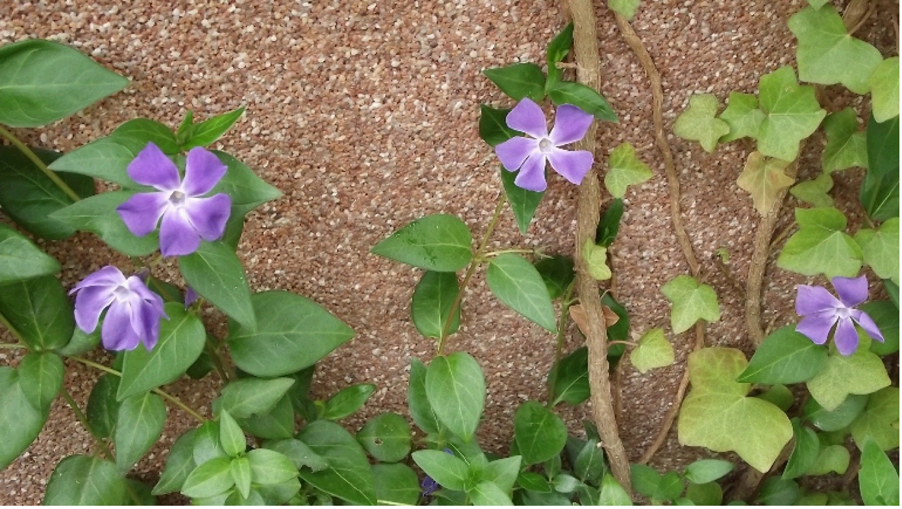Nature Bitreduzierung auf 16 Bit

Nature Bitreduzierung auf 64 Bit
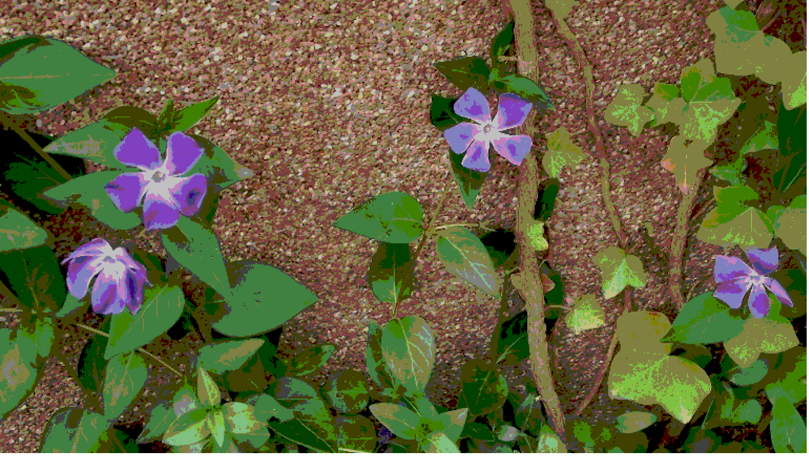Manmade Bitreduzierung auf 8 Bit
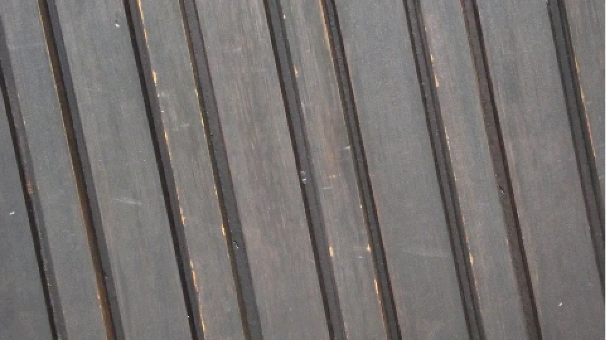Manmade Bitreduzierung auf 16 Bit
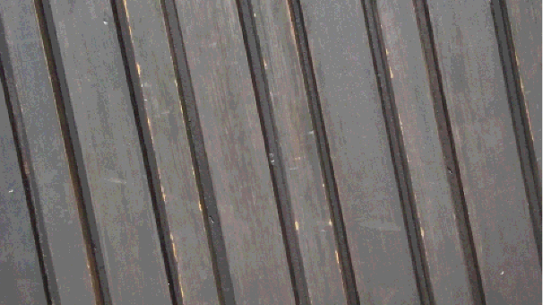Manmade Bitreduzierung auf 64 Bit

Je stärker die Bitzahl reduziert wird, desto mehr Farbtiefe geht verloren. Dadurch wirken die Farben unnatürlich, es entstehen große Farbblöcke und feine Details verschwinden. Beim Nature-Bild wird die Verschlechterung ab einer Reduzierung durch 16 sichtbar, da viele feine Farbverläufe vorhanden sind. Beim Manmade-Bild treten Veränderungen erst leicht ab Faktor 16 auf. Bei einer Reduzierung durch 64 wirken beide Bilder stark blockartig und unscharf.
Code-Bild:
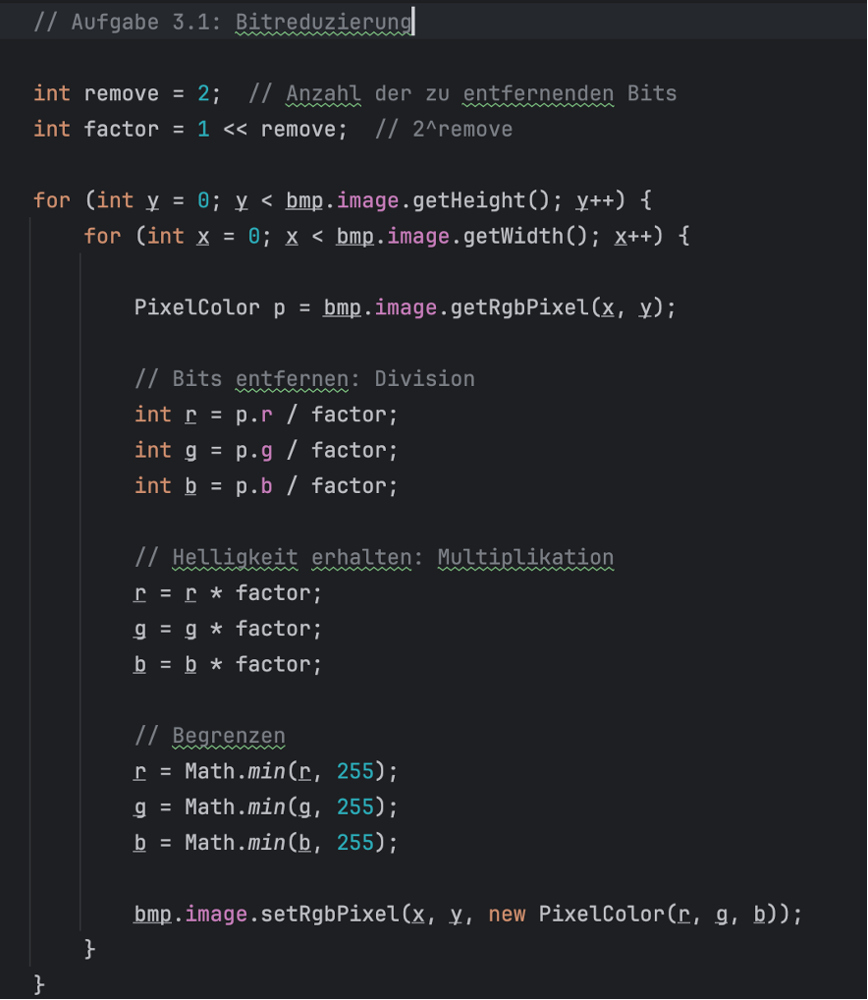Code-Bild:
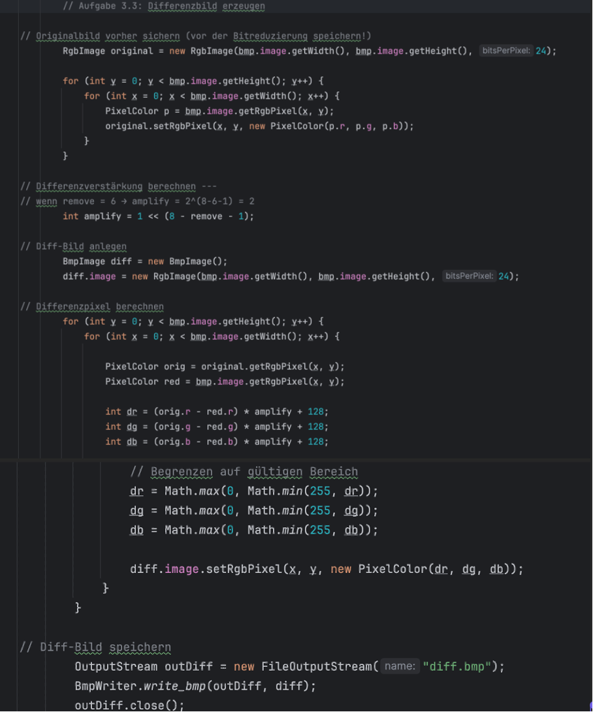Diff.bmp:
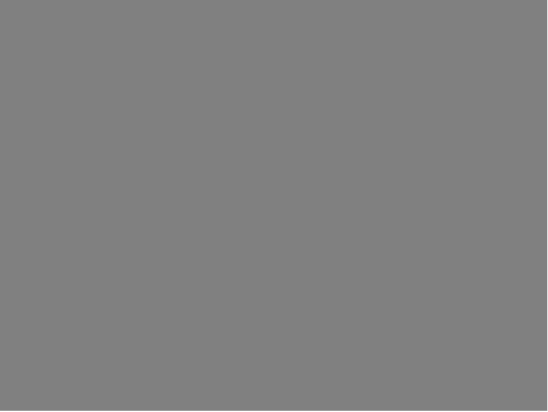Out.bmp:
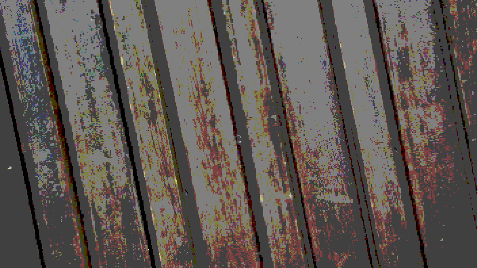Die Differenz kann auch negativ sein, BMP speichert aber nur 0–255. Deshalb wird der Wert einfach um 128 erhöht, damit 0-Fehler als Mittelgrau (128) dargestellt wird: Differenz + 128